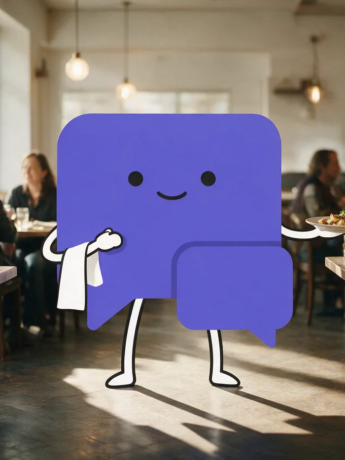
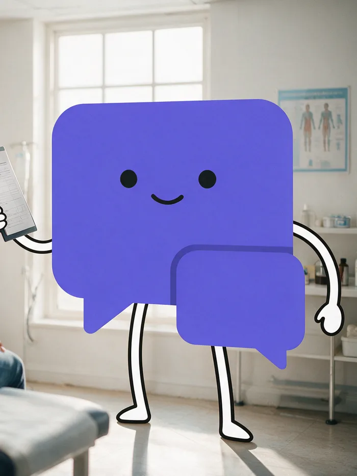
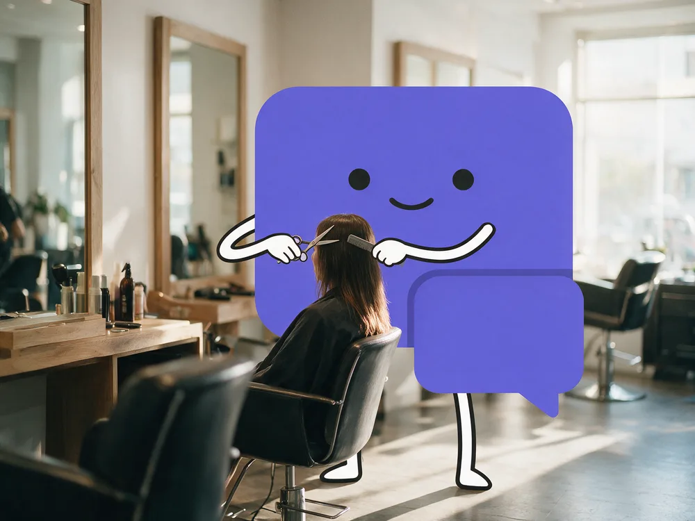
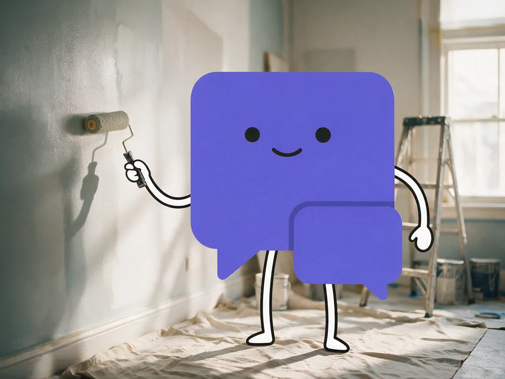
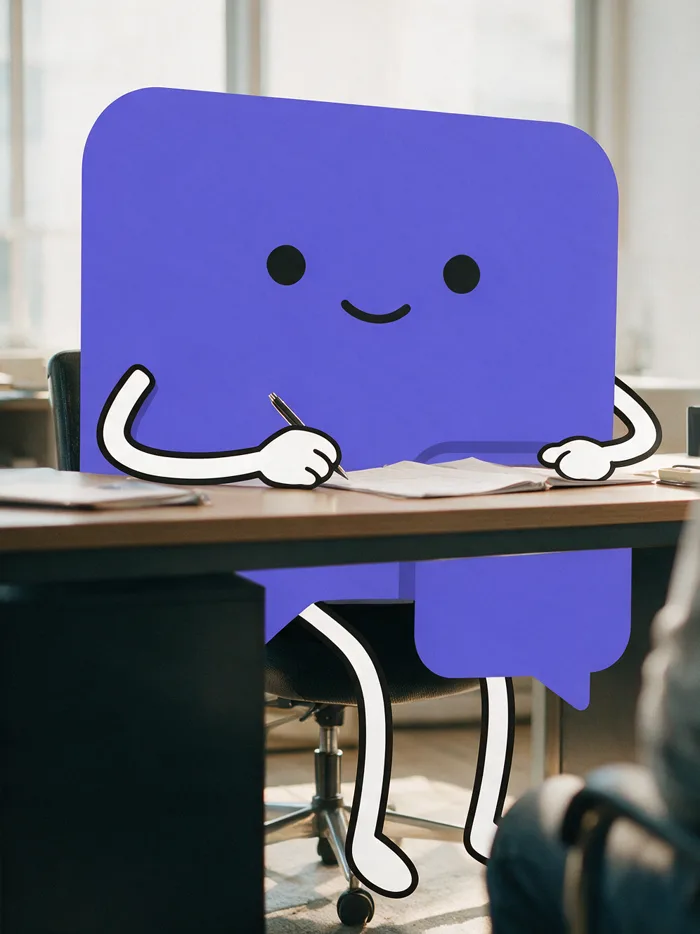
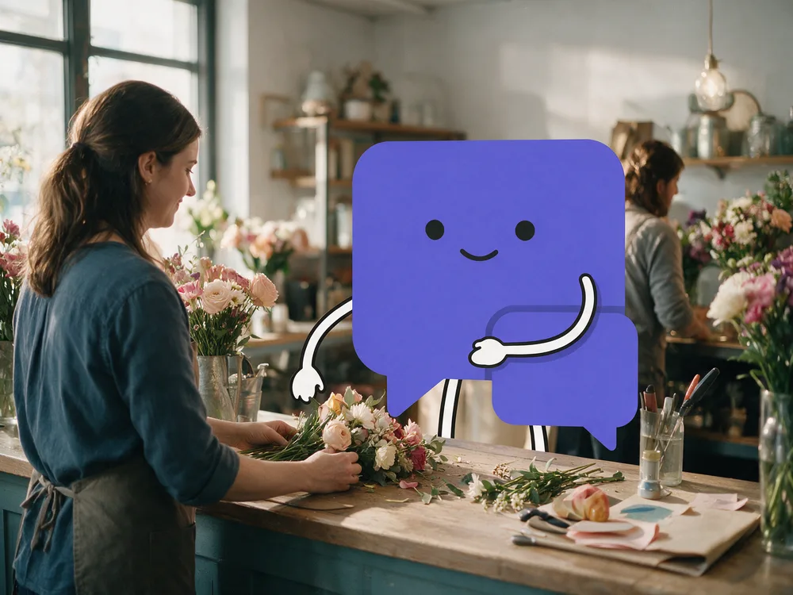
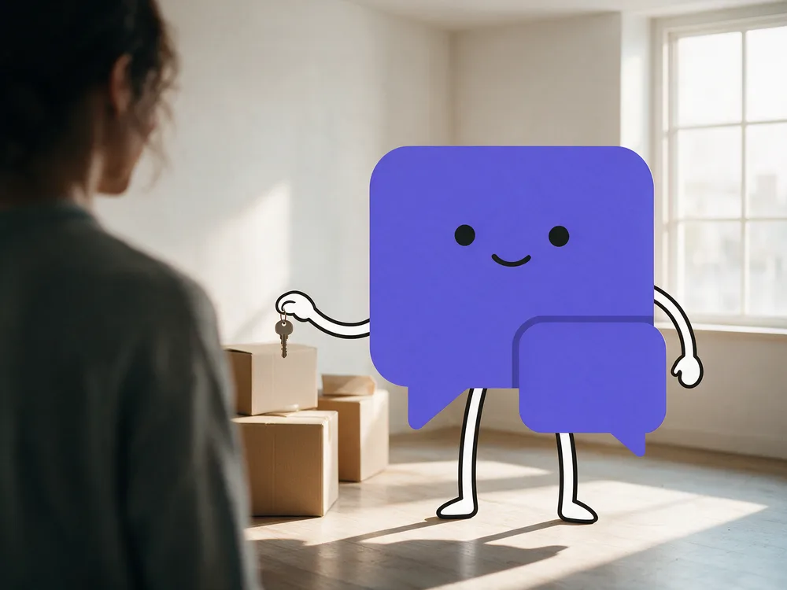
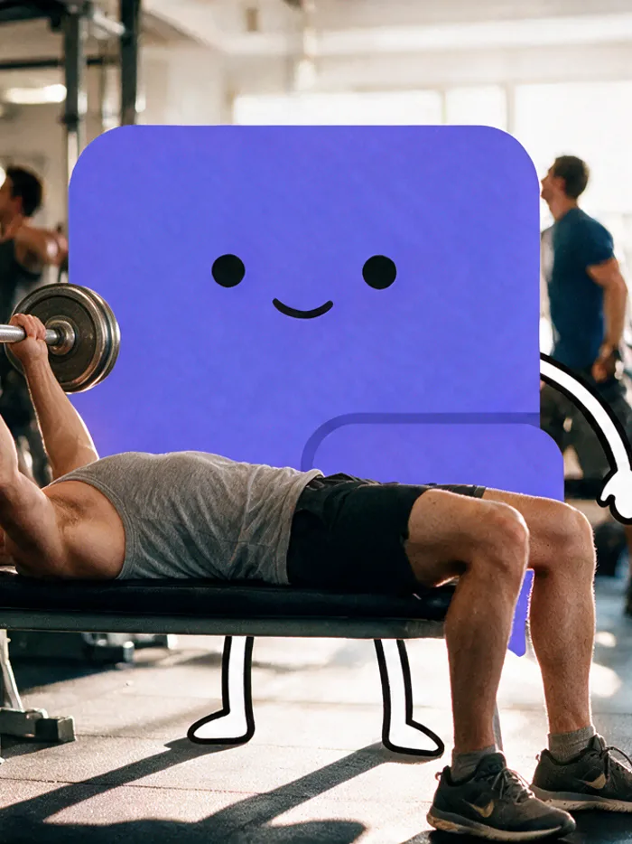
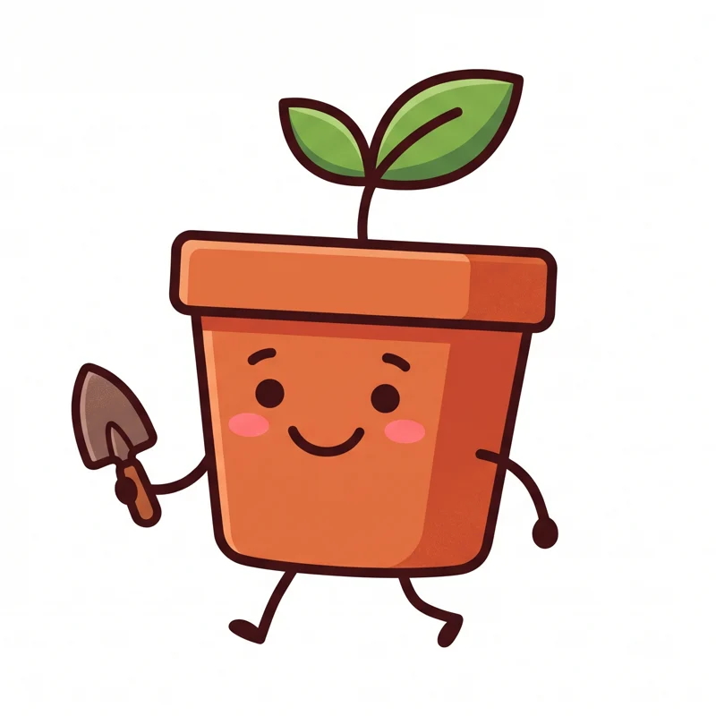

01
Dein eigener Mitarbeiter.
Ein Gesicht bleibt im Kopf, ein Chatfenster nicht: Deiner hat einen Namen und fünf Zustände — wartend, zuhörend, nachdenkend, sprechend, verlegen —, damit Besucher sehen, dass da jemand zuhört.
Er begrüsst deine Besucher, beantwortet ihre Fragen und führt sie zum richtigen Angebot. Rund um die Uhr, auf jeder Unterseite. Er lernt alles selbst von deiner Webseite, du musst nichts vorbereiten.

Wartend, zuhörend, nachdenkend, sprechend, verlegen. Besucher merken, dass jemand zuhört.
Adresse eingeben, Scan abwarten, Gesicht geben. Kein Wissensdokument, keine Agentur, keine Einrichtungsgebühr.
Er liest deine Seite selbst und zeigt dir vorher, was er verstanden hat.
Pro Monat, in Franken, mit MwSt. Kein Zähler, keine Nachzahlung, monatlich kündbar.
Alle Zahlen hier lassen sich am Produkt nachprüfen. Kundenzahlen stehen bewusst nicht dabei, es gibt noch keine.
Ein Gesicht bleibt im Kopf, ein Chatfenster nicht: Deiner hat einen Namen und fünf Zustände — wartend, zuhörend, nachdenkend, sprechend, verlegen —, damit Besucher sehen, dass da jemand zuhört.

Adresse eingeben, Scan abwarten, Gesicht geben — nach drei Minuten kennt er dein Angebot, ohne dass du ein einziges Wissensdokument geschrieben hast.

Welche Seite offen ist, welches Produkt dort liegt, was es kostet und ob es da ist — er spricht über genau dieses eine, statt allgemein zu bleiben.

Passende Produkte kommen als Karte mit Bild, Preis und Knopf, und zu einer Stelle auf der Seite scrollt er hin, statt sie zu beschreiben.

Ton, Du oder Sie, Antwortlänge, Emojis, Grenzen und Übergabe stellst du selbst ein — bis er klingt wie dein Betrieb und nicht wie eine KI.

Was nicht auf deiner Seite steht, sagt er auch nicht: Lieber antwortet er „das steht dort nicht“, als eine Zahl zu nennen, die niemand geprüft hat.
Die grossen Anbieter bauen Werkzeuge, die Anfragen wegräumen sollen. Das ergibt Sinn, wenn du eine Supportabteilung hast. Hast du keine, ist dein Mitarbeiter kein Sparposten, sondern zusätzliches Personal im Schaufenster: mit Namen, mit Gesicht, und mit deiner Art zu reden.
Besucher fragtHabt ihr den Tisch auch in 240 cm?
Zu dieser Frage liegen mir leider keine Informationen vor. Bitte wenden Sie sich an unseren Kundenservice.
Derselbe Agent, andere Einstellung:
Dazu kommen Name, Rolle, Gesicht und was er ausdrücklich nicht sagen darf. Stell ihm die Frage selbst.
Beides läuft gerade wirklich. Kein Video, keine Aufnahme, keine Folien.
Drei Fragen gratis, ohne Konto. In der Vorführung: frag ihn nach einem Tisch unter 500 Euro.
Er liest deine echte Webseite statt einer Vorlage für „typische" Betriebe. Ein paar Beispiele, wie unterschiedlich das aussieht:

Cafés, Bäckereien, Bars, Hotels. Öffnungszeiten, Tageskarte, Tisch reservieren.

Zahnärzte, Physio, Tierärzte, Apotheken. Sprechstunden, freie Termine, was im Notfall gilt.

Kosmetik, Massage, Nagelstudios. Termin, Preise, wie lange es dauert.

Maler, Elektriker, Sanitär, Schreiner, Garagen. Offerte, Notfall, bis wohin ihr fahrt.

Anwälte, Architekten, Versicherungen, Berater. Erstgespräch, Fachgebiete, was es kostet.

Boutiquen, Buchhandlungen, Blumen, Onlineshops. Ist es da, was passt dazu, wie kommt es zu mir.

Makler, Verwaltungen, Umzug, Reinigung. Objekte, Besichtigung, wer zuständig ist.

Fitness, Yoga, Fahrschule, Musikschule. Anmeldung, Kursplan, Probelektion.
Nicht dabei? Er lernt trotzdem von deiner Webseite — sie ist seine einzige Quelle.
Alle diese Figuren sind hier entstanden, aus nichts als der Webseite und ein paar Angaben zum Betrieb. Deine sieht anders aus.



Keine Wissensdatenbank, keine Dokumentation, keine Agentur.
Ein Gespräch, wie es auf einer echten Seite läuft.
Gratis anfangen, Basis für CHF 29, Plus mit eigener Figur für CHF 49 im Monat. Kein Guthaben, das ausgeht, keine Abrechnung pro Gespräch, monatlich kündbar.
Rund zehn Minuten. Du wählst einen Plan, gibst deine Webseite an und wartest den Scan ab. Danach prüfst du, was er verstanden hat, und gibst ihm ein Gesicht. Zuletzt fügst du eine Zeile in deine Seite ein.
Nein. Kein Wissensdokument, keine FAQ-Liste, keine Texte. Er liest deine Seite. Wenn du willst, kannst du danach eine Speisekarte oder ein PDF ergänzen.
Er sagt es und gibt deine Kontaktdaten weiter. Auf Wunsch nimmt er die Frage samt Kontakt auf, sie liegt dann in deinem Posteingang. Er rät nicht.
Nein. Er kann nichts anklicken, nichts abschicken, nichts bestellen. Er zeigt und erklärt. Mehr lässt das System nicht zu, geprüft wird das an zwei unabhängigen Stellen.
Bei Basis und Plus nichts Besonderes: Es gibt kein Guthaben, das ausgehen kann, keine Abrechnung pro gelöstem Gespräch und keinen Tarif, in den du automatisch rutschst. Nur der Gratis-Plan hat eine feste Obergrenze von 50 Gesprächen im Monat.
Ja, monatlich, im Dashboard. Keine Mindestlaufzeit, keine Einrichtungsgebühr.
Er liest Texte, die jeder auf deiner Seite hinterlegen kann. Deshalb ist sein Spielraum fest begrenzt, an zwei Stellen unabhängig voneinander geprüft.
Der Kauf bleibt die Entscheidung deiner Kundschaft. Ein Klick auf „Bestellen" lässt sich nicht rückgängig machen, deshalb drückt er ihn nie.
Adresse eingeben, Scan abwarten, Ergebnis ansehen. Bis dahin kostet es nichts.